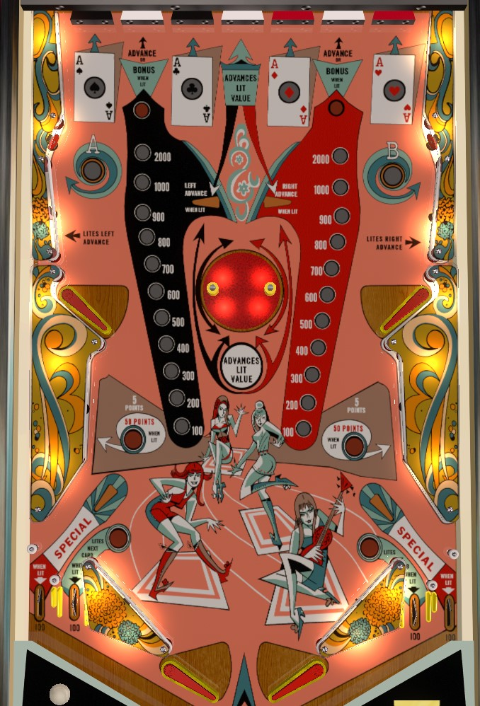

Not to be confused with 4 Queens (Bally, 1970).
Build the bonuses by spinning the center spinning disk or hitting the white standup targets along the back of the game. To collect a bonus, hit the Spade and Club black standup targets in the back to light the white target between them for black bonus collect; do the same with the Heart and Diamond target to qualify the red bonus collect. Hitting both A and B lights the near out lanes for a card advance; this is a carryover award shown on the backglass, and if you're the one that advances it to the end, you can get up to 3 specials based on game settings, and specials can be worth 1,000 points.
4 Aces does not have a conventional shooter lane. Rather, there is a large button to press on the apron that fires the ball upward between the flippers (and usually slightly to the right as well, so that the ball doesn't come straight back down the drain too). There is no skill shot.
There are two separate bonuses in the game: black and red. One of the two bonuses is highlighted at a time: the side wall above the upper left flipper selects the black bonus, and the side wall above the upper right flipper selects the red bonus. Each bonus starts each ball at 100 points; I have been unable to confirm for certain whether each bonus maxes out at 2,000 or 2,900 points.
There is a center spinning disk with two posts in the middle of the table. Shooting the ball at the posts causes the disk to spin, and the more the disk spins, the more the selected bonus will advance. You can also advance the black bonus by hitting the left white back target; advance the red bonus by hitting the right white back target; and advance the selected bonus by hitting the center white back target.
The bonuses are not an end of ball bonus, and they must be collected mid-ball. To collect the black bonus, light the Spade and Club suits by hitting the two black back targets; collecting both lights the left white back target for black bonus collect. The red bonus works similarly: collect the Heart and Diamond from the red back targets to light the right white back target for red collect. Once a suit target is lit, it stays lit until the end of the ball.
On some copies of 4 Aces, the center spinning disk was replaced with a conventional pop bumper, due to unreliability and fragility of the spinning disk mechanism.
The standup targets in the upper corners of the game (not on the back wall) are labelled A and B. Hit a target to light that letter.
Lighting A or B lights the lower left or lower right side wall to score 50 points instead of 5, respectively.
Lighting both A and B lights the two near in lanes for a playing card. The current playing card is indicated along the top of the backglass. This is a carryover award that persists across players and games. If you are the one to advance the lit playing card all the way to the Ace, you earn 1, 2, or 3 specials, depending on game settings. Specials can each award a free game or 1,000 points.
If the A is lit and the black bonus is advanced to 2,000 points (or more?), the far left out lane is lit for Special. The same happens at the far right out lane if the red bonus is advanced to 2,000 or more and the B has been lit.
There are no in lanes. Flippers back up directly to the slingshots. Full size 3 inch flippers are used. Slingshots score 1 points. There are two out lanes on each side, which all score 100 points. Far out lanes are lit for Special if that side's bonus has been built to at least 2,000 points and that side's A-B letter has been collected. Near in lanes are lit for a playing card advance if both A and B are collected.
There is no end of ball bonus. Tilt ends the ball in play only. There are no extra balls. Specials can each award 1 free game or 1,000 points. Max score is 9,990.